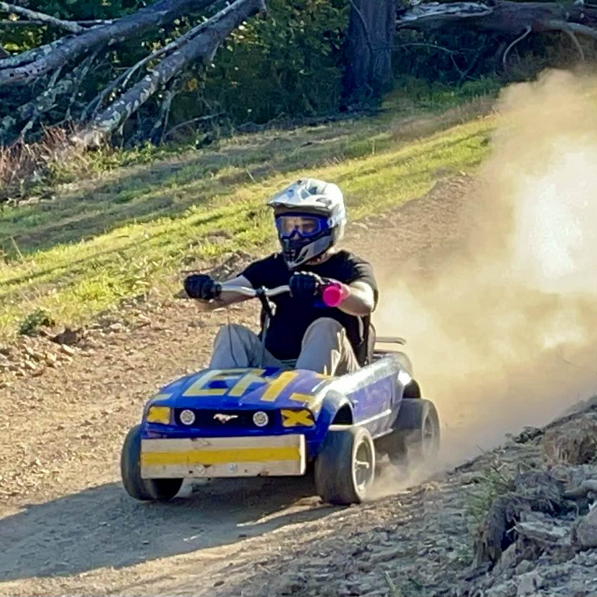

Mustang PRS
Project Lead — Jack Desantis
The purpose of the Power Series Racing is to modify a kid’s electric toy to race around a track and impress the crowd for a maximum of 500$. Makerspaces, Hackerspaces, highschools and colleges all jump in on the fun and build their masterpieces to race around a track at high speeds and wear funny costumes/have funny cars to impress the crowd for bonus Moxie points. These races happen at many Makerfaires around the country and we did quite well for our first race ever down in Queens, NY.